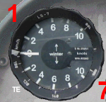
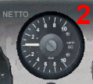
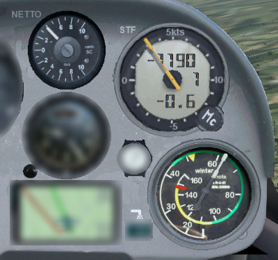
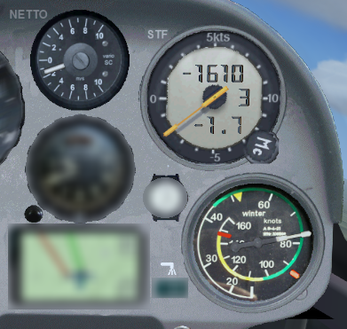
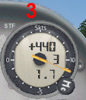
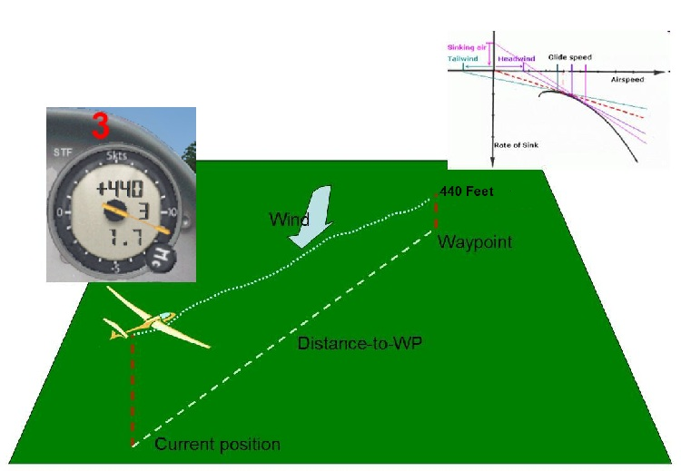
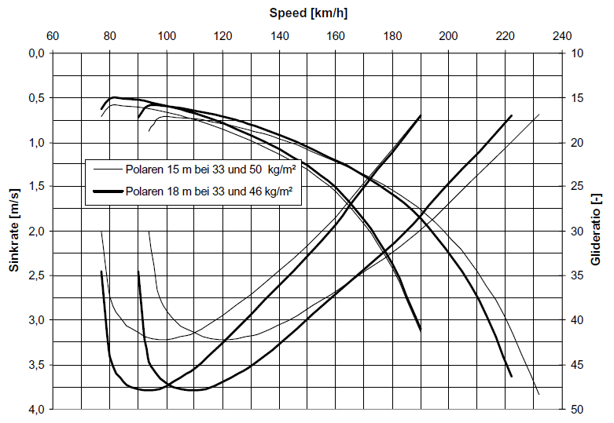
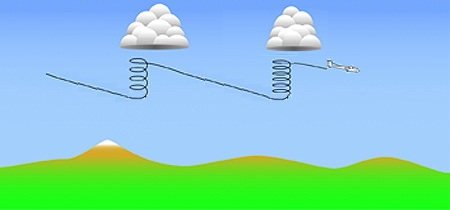
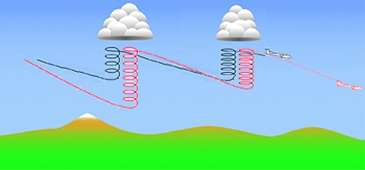
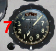

Soaring with FSX >>
Aircraft/Gauges >> LS8-18
This complete LS8-18 download includes a new instrument panel
(in the LS8-18 created by Wolfgang Piper), installing
a new
'LS8-18 B21' glider (that will sit alongside Wolfgang's original LS8-18 if you have that
installed). This LS8-18 version replaces all
the CAISET DLL instruments, and adding a variety of new instruments to the panel. Particular care
has been taken to accurately calibrate the
instruments to the LS8-18 polar.
The new instruments are all FSX XML gauges without the need for 'exe' or 'dll' installation (the glider
is a simple drag-and-drop into the FSX folder), and the panel includes three variometers, total energy,
netto and speed-to-fly.
Overview


Wolfgang has produced an excellent glider model, with an accurate polar. The panel extends the instruments as follows:
- The Winter vario (top left) is now Total Energy compensated.
- A 57mm slave vario (top middle) displays an accurately calibrated Netto reading
(i.e. vertical movement of outside airmass).
- The '302' LCD vario (top right) gives arrival height AGL at the next waypoint,
climb average, and the needle moves with a
'Speed to fly' indication (down=speed up, up=slow down).
- The GPSNAV is updated for readability from the FSX version.
- A 'moving map' has been added to the panel
Plus some other minor instrument improvements. The Netto and Speed-to-fly readings
automatically compensate for the ballast currently carried. A new 'trimwizard' is implemented, which
sets the trim immediately on the trigger being pulled on the joystick. All instruments correctly
switch to other backgrounds and units dependent upon FSX units settings.
The panel instruments
1. Winter Variometer displays Total Energy climb/sink rate
|  |
The Winter variometer main needle is displaying Total Energy compensated climb rate. This is
simply your actual climb rate (or rate of sink) with small adjustments to compensate for
changes in your airspeed which would otherwise affect the reading.
|
When the pilot chooses to pull up to enter a thermal or to dive to exit a sink
area, an uncompensated variometer would include the change in altitude due to the
change in velocity in its read-out, thus obscuring the climb or sink rate due to the rising air.
Therefore an uncompensated variometer can only accurately indicate the vertical
speed of the glider when flying at constant speed. The effect of total energy compensation
can easily be seen if you pull up into a climb in still air: an uncompensated vario will show a rapid
climb rate, while the TE vario will correctly show you continuing to lose energy.
The indicated climb on an uncompensated vario is particuarly misleading as you pull up
into a thermal - at this point the uncompensated vario will indicate a climb whether you're
in a thermal or not so it is possible for inexperienced pilots to be turning and cimbing into
a thermal that is not actually there. These have been called stick thermals as they are
created by the action of the pilot pulling back on the 'stick'.
The action of diving or pulling up affects the speed of the sailplane. A sailplane
can exchange height for speed or speed for height, i.e. potential energy for kinetic
energy or kinetic energy for potential energy. In fact, in still air, the sum of
potential energy and kinetic energy, i.e., the Total Energy, remains constant
(neglecting energy loss due to drag), hence the name Total Energy compensation.
Most modern sailplanes are equipped with Total Energy compensated variometers.
The instrument automatically switches between m/s or Knots display depending on
your FSX settings.
2. Netto Vario (slaving from the 302 LCD vario)
|  |
The needle displays NETTO climb rate (i.e. the vertical movement of the air outside
the glider), by subtracting the normal aircraft sink rate from the
total energy reading shown on the Winter vario.
|
The Netto reading is a further refinement upon the Total Energy reading delivered
by the Winter variometer. The Netto vario uses the glider airspeed to derive the sink rate
the glider should be sinking at in still air at the current airspeed, and subtracts that
from the 'total energy' reading. So the reading you're left with should be the net vertical movement
of the air outside the glider.
Note that this FSX gauge is performing the same calculation that would be performed in
a real glider gauge, using the input pressure sources (i.e. is it not 'cheating' by just reading
some FSX vertical air movement variable). This means the gauge performs in the same way as
a real gauge, e.g. if you open the airbrakes the gauge will interpret that correctly as
unexpected sink. If you leave the wheel down, the netto vario will display sink even in still
air, as it can tell the glider isn't flying at it's calibrated sink rate.
If you turn CumulusX off, and select 'clear weather', you'll find the Netto vario reads
pretty close to zero throughout the range of normal flying. You'll see momentary dips into
apparent sink as you manoever the glider (e.g. a pull-up) as it loses energy during that
process. If you do a 'push-over' (i.e. fly as if going over a hump-backed bridge) the netto
reading will correctly briefly go positive as the reduced loading on the wings results in
temporarily improved efficiency at low speed.
The instrument automatically switches between m/s or Knots display depending on
your FSX settings.
3. '302' LCD Variometer / Flight Computer
 |
The main needle displays a Speed-to-fly indication (i.e. the needle moves down, as if indicating
sink, to tell you to speed up and vice versa). The top numeric display is the expected
arrival height AGL at the next
waypoint in the flightplan. The middle numeric display (at 3-o-clock on the instrument)
is the Macready setting. The bottom numeric display is the climb average.
Heights are in
feet, climb rates in knots, or meters and meters-per-second depending on your FSX units
settings.
The four readings (STF, arrival height, maccready, climb average) are explained in more detail
below.
|
302 Needle: Speed-to-fly
|  |
Speed-to-fly is yet another derived improvement in variometer compensation...
In this image, the stf needle is indicating lift (as if +3 knots) meaning
"you're in lift, slow down". You can see the Netto vario confirms this. At this point it would
be reasonable to question the difference between a Netto and a Speed-to-Fly variometer, as they
both appear to behave in a similar way (generally, needle up in lift, down in sink). But the difference
is probably more marked than the difference between the Netto vario and the Total Energy vario (with a
bit of luck you understand that difference). If you think of the Speed-to-Fly instrument as a
variometer then the reading starts making sense in that it is taking some of the thinking workload
off the pilot by indicating lift only when the you should actually slow down. i.e. pull up i.e. the
lift has to be strong enough to exceed the MacCready setting and you have to be flying fast enough that slowing
up is sensible. Counter-intuitively, you can fly through a little bit of lift and if you have a higher MacCready
setting, and you're not flying fast enough, the STF needle will still indicate sink, i.e. speed up.
Explaining this on paper is a poor substitute for flying with the instrument and getting used to it's
behaviour. At first you can just blindly follow its instruction, speeding up or slowing down depending on whether the
needle is going down or up. But after a short while you get used to thinking of the instrument just as a particularly
intelligent variometer, than doesn't bother you with lift if you're already slow enough.
|
Given that the variometer is computing the 'Netto' movement of the airmass outside the
glider, the vario can compute the optimal speed to be flying through this air. I.e. if you
are flying through sink you should fly faster to spend less time in that sinking air,
and vice versa for rising air. The faster the air is sinking, the more you should speed up.
The speed-to-fly reading is the delta between the computed optimal speed
and the speed you are currently flying, displayed on the normal vario needle. If you are
flying at the optimal speed then the needle will show zero. If the needle goes down as
if indicating sink, then you should speed up.
A fully ballasted glider should normally be flown fairly fast (e.g. 90 knots) to benefit
from all that ballast on board.
If you're flying too slowly (common for inexperienced pilots) then the STF indication
will indicate sink i.e. speed up. As you speed up, the needle will return to zero as you
reach the 'optimal' speed.

These instruments on the panel have a unique learning aid in the use of the
Speed-to-fly indication: if you click the face of the ASI (i.e. airspeed)
gauge, the real-time computed speed-to-fly is indicated with a red 'bug' moving around
the rim of the ASI
gauge. In the image above, the 'stf bug' is drawn on the ASI at about 92 knots.
You will see the delta between this bug and the ASI needle is directly
translated to the Speed-to-fly needle on the 302 computer vario. Also you can immediately
see the effect other variables have upon the computed speed-to-fly, e.g. if you change the
MacCready setting the speed-to-fly will change, or if you dump ballast then the speed-to-fly
will gradually reduce as the ballast drains out.
Note the instrument has no knowledge of thermals ahead, and the reading does not take into
account your 'pucker-factor' based on proximity to the ground,
so if you're low and at risk of a landout you should not be charging around
at 90 knots regardless of what the STF instrument is telling you to do... in this situation you
should simply turn the MacCready down to zero.
302 Digital readout: Arrival Height
|  |
The flight computer
will attempt to calculate your likely arrival height at the next waypoint.
The simulated reading in the FSX LS8-18 computer vario is unusually sophisticated
in that it gives you arrival height *AGL* (above ground, at the waypoint).
In this case, the flight computer is suggesting you will arrive at 440 feet above the
next waypoint.
|
The graphic below illustrates a pilot gliding towards a waypoint, with the 302 vario indicating an
arrival height of 440 feet (the real Cambridge 302 actually doesn't
display arrival height at all, just an altimeter reading)..

The flight computer uses the elevation given in the flightplan (or the next
point-of-interest in a mission) for the height of the next waypoint, and arrival
heights are displayed relative to this. If you pick an airport as a waypoint in the
flight planner then ground elevation is by default put into the flightplan. If you use
some other waypoint type in the flightplan (e.g. an Airway Intersection) then the
altitude of that waypoint will be embedded in the flightplan and the 'arrival height'
computed by the vario will be relative to that. So for normal cross-country soaring
purposes you should ensure the heights in the flightplan are ground elevations at
each waypoint (or Zero if you'd prefer the arrival height indication to be MSL).
As with the FSX GPS, this indication is meaningless unless you have a sensible flightplan loaded in FSX.
The flight computer has to take into account a variety of factors to come up with a reasonable prediction of your
arrival height, assuming a straight glide to the waypoint. These include:
- Current altitude - obviously how high you are now will directly affect how high you will be at the waypoint.
- Glider performance (also called the glider polar) - this gives the glide ratio at various speeds, i.e. the slope you
glide down in still air. Generally the faster you fly, the steeper you will come down. At 56 knots the LS8-18
will have a glide ratio of 48:1, i.e. in still air after flying 48km the LS8-18 will have descended 1km (1000m,
approx 3300 feet). 'Glide ratio' is also referred to as the 'L/D' ratio (i.e. the ratio of Lift/Drag) because the
physics means that these things are always equal, and 56 knots is the 'Max L/D speed' of the LS8-18. If you fly faster,
the glider will come down faster but it is important to know the aircraft is increasingly *less*
efficient at higher
speeds so if you double the speed you *more* than double the sink, i.e. the glide ratio is lower
at high speeds.

- Distance to go - the further away the waypoint is, the lower you are going to be when you get there.
- Speed you are going to be flying - the faster you fly, the steeper you come down. You tell the flight computer how
fast you will be flying via the MacCready Setting via the rotating knob labelled "Mc" (click the top or bottom of the
knob to increase/decrease, or use scroll wheel on mouse). With a MacCready setting of "0" you are telling the computer
you are expecting zero lift in the next thermal, i.e. the cruise speed you will be flying will be 'Max L/D' i.e. around
56 knots and simply stretching the flight as far as possible. A MacCready setting of 3 knots (i.e. you're telling the
flight computer the next thermal will be 3 knots) means you are expecting to cruise at 80-90 knots. Of course you don't
really *know* what the next thermal strength is, so the MacCready setting is based on your best judgement of conditions ahead.
- Wind - strength and bearing computed automatically by the flight computer, a headwind will make you come down more steeply (reduce your arrival height), a tailwind will extend your glide (increase your arrival height).
You can view the same 'arrival height' reading either of two ways, which are actually synonymous:
- it is the predicted altitude AGL you will arrive at the waypoint
- it is your current height above the glideslope that would arrive at the destination at zero feet/meters.
You can use either of these definitions, whichever you're comfortable with.
As a reminder, the 302 flight computer vario is assuming zero overall lift/sink during this glide to the
waypoint, that the wind remains constant at its current value (a headwind shown here) and that the
pilot flies at a speed as appropriate to the MacCready setting.
- If the pilot flies through sink, the glider will sink below the computed glide path, and the
calculated arrival height will reduce.
- If the wind reduces with height (as it often does), then in this case the headwind will reduce
and the previously calculated arrival height (using the stronger higher headwind) will be pessimistic and
the pilot will see the arrival height improve as he proceeds towards the waypoint.
- If the MacCready setting is higher than zero, the pilot can increase the calculated arrival
height by reducing the MacCready setting.
More sophisticated flight computers, such as the SDI C4, can actually perform this calculation
around multiple waypoints to the final destination, which is fairly complex,
whereas the simulated Cambridge 302 shows arrival height at the next waypont only
302 Digital readout: MacCready Setting
|
The MacCready Setting is the value input by you, telling the vario the
expected thermal strengths.
In this case, you have told the flight computer to assume an expected thermal strength
of 3 knots.
Note that m/s will be used for this reading (in 0.5m/s increments) if metric settings
are chosen in FSX.
|
The value is adjusted using the knob labelled 'Mc' at 5-o'clock on the LCD vario. Easiest
is to hover the mouse over the knob and rotate the mouse wheel. The vario displays the MacCready
setting in either m/s or Knots depending on your FSX settings.

In the image above, the pilot has set a conservative MacCready setting and is flying relatively
slowly between thermals and conserving height. This means she needs to climb less in thermals, i.e.
saves time in thermalling (but is possibly losing time in the cruise).

The pilot in this image has set a higher Macready setting, and is cruising faster
between thermals. This means he has to climb more than the pilot that was cruising more
slowly. Which pilot achieves the best cross-country speed depends on the strengths of the
thermals (i.e. which pilot has guessed correctly in the Macready setting). If the thermals
are weak, then the pilot that is cruising more slowly will achieve a higher overall speed because
they are spending less time climbing in the weak lift.

In this case, if we see the two flights superimposed, we see the more aggressive flying by the
faster pilot has actually paid off, i.e. the thermals are strong enough that his additional height loss
and need to climb is outweighed by the increased speed beween thermals.
Essentially the MacCready Setting is the value you use to tell the computer how aggressively (i.e.
quickly)
you want to fly, and the computer will perform its computations based on this value. For a
fully-ballasted LS8-18, a MacCready Setting of 3 knots (1.5m/s) will mean you should be
flying at about 90 knots between thermals. The idea is simply the stronger the thermal you
expect, the faster you should fly to get there. This is well explained in the
"Art of Flying" last video in the sequence on this page.
302 Digital readout: Average Climb Rate
|
This shows a moving average of total energy climb/sink in either Knots or m/s depending on
FSX units settings.
In this case the computer vario is recording an average climb rate of 1.7 knots.
|
When you are thermalling, this displayed value can guide your judgement on what to set for the
Macready setting. Also, if you are thermalling, if this average is below the readings you
have typically seen in other thermals on the same flight, then perhaps you should leave the
current thermal and find another.
This average will also give you a clue that the thermal strength is weakening near the top of
a climb, and you should leave the current thermal rather than milk it to the top.
4. Air Speed Indicator

|
As seen on all aircraft, the ASI displays airspeed in either Knots or km/h depending
on FSX settings.
|
This instrument in the LS8-18 includes a speed-to-fly training aid made visible by clicking
on the face of the dial (seen here at 92 knots). See information above under 'speed-to-fly'.
5. GPS-NAV GPS

|
The GPSNAV shows the direction and distance to the next waypoint in the flightplan.
For the GPSNAV to display something sensible,
you must have an FSX flightplan loaded. The moving map will display the flightplan.
|
The GPSNAV is similar to the stock FSX DG808S gpsnav with various
improvements made to improve readability. More significantly, the internal 'GPS' engine has been re-written to
replace the original programming, so the pilot can step forwards and backwards through ALL the turnpoints in the
task by using the 'up' and 'down' buttons.
Details on the home page are as follows:
- To: this is the identifier of the next waypoint (assuming a flightplan is loaded)
- Direction indication points to the next waypoint.
- Brg: Bearing to next waypoint.
- Trk: You current track (i.e. direction) over the ground.
- Dist: Distance to next waypoint.
The distance-to-go units (miles, km) depends on your
FSX setting. You can click the 'left' and 'right' buttons on the GPSNAV to see another couple of pages of information
(waypoint info) but these are less useful than in the real GPSNAV to make sure you've loaded the right flightplan,
because in FSX you can just look at the moving map or use the FSX menu.
The GPSNAV 'page' you see displayed above is the 'Home' page of the GPSNAV, and it the one used for normal
flight around a task. Any waypoint of the task can be chosen to be the current 'active' one by using the 'up' and
'down' cursor buttons while on this home screen. To gain familiarity with the instrument, try these buttons while you're
still on the ground.
The GPSNAV will automatically select the next waypoint in the current flightplan to be 'active' when you
are within 500 meters of the current waypoint. However there is nothing to stop you overriding this behaviour at any
time simply by using the 'up' button to move on to the next waypoint. An example of where this might be useful would be
in a start of a task, where you know the start line allows you to be a lot further than 500 meters from the start point,
but you still want to have the GPSNAV move on to the first TP even though you haven't passed 'through' the start point.
Also, many FSX soaring flightplans have the home takeoff airfield as the first waypoint in the flightplan even
though it isn't actually the start point of the task, and one click of the 'up' button will put things straight ready for
your record-breaking competition flight.
In some circumstances, you may wish to keep the GPSNAV pointing at a waypoint even though you have moved
within 500 meters of it and the gauge has clicked over to the next,
e.g. you've done a poor start and want to start again. In this case you can simply re-select the start waypoint by using the
'down' arrow. The usage is intuitive and obvious if you just try the 'up' and 'down' buttons.
If you use the 'left' and 'right' arrow buttons, the GPSNAV will cycle through a couple of other 'pages' of information
about the current active waypoint. This is only marginally useful in the air, although one page contains the
elevation of the active waypoint (labelled 'EL:') and this is useful to check the 'arrival height' being
presented by the 302 LCD computer as this arrival height value is above this elevation given for the
waypoint. Normally the elevation for the waypoint will be the ground elevation, so the 302 arrival height
reading will be what is commonly referred to as 'AGL' (above ground level).
6. Moving Map GPS

The 'Moving Map' GPS is fairly obvious and has very limited function - all
you can do is zoom in/out using the +/- buttons. The map displays the flightplan and
actually I find it easier to navigate to the next waypoint by ensuring the flightplan
track drawn on this instrument is vertical than using the '>>' indications on the GPSNAV.
In the image above, the glider is on track, but heading off-track by about 15 degrees. The active leg
of the flightplan (i.e. soaring task) is highlighted in green, the inactive legs red.
The current leg on the flightplan is shown with a green line, the others will be red.
7. Altimeter

This is a standard static-pressure-driven altimeter, that switches units from
feet to meters in FSX depending on your FSX units settings.
8. Water Ballast percent full indication


The pair of levers on the starboard cockpit wall are the Ballast Valves. CLICK on the
lever to toggle both open/closed. The LS8-18 loads into FSX fully ballasted with water.
The small LCD display on the panel displays percentage of water ballast carried.
Broadly, full water ballast increases the weight of the empty glider by 50%.
Modern competition gliders carry jettisonable water ballast (in the wings and
sometimes in the vertical stabilizer). The extra weight provided by the water
ballast is advantageous if the lift is likely to be strong, and may also be
used to adjust the glider's center of mass.
The LCD ballast indicator has a configuration aid for FSX to help in
transplanting the gauge into another glider. If you click the face of the
ballast indicator gauge it will display the current all-up weight of the
glider in Kilograms. As you dump ballast you'll see this figure reduce.
Although heavier gliders have a slight disadvantage when climbing in rising air,
they achieve a higher speed at any given glide angle. This is an advantage in strong
conditions when the gliders spend only little time climbing in thermals. The pilot
can jettison the water ballast before it becomes a disadvantage in weaker thermal
conditions. Another use of water ballast is to dampen air turbulence such as might
be encountered during ridge soaring. To avoid undue stress on the airframe, gliders
must jettison any water ballast before landing. (ref wikipedia)

9. Undercarriage (Gear) lever

In FSX the 'G' key will raise the single main wheel, or you can click this lever.
The lever is up when the gear is up.
10. Trim indicator

The GREEN knob on the left side of the panel is TRIM, i.e. the 'neutral'
setting of the elevator. 'Trim forward' will bias the glider into more of a
nose-down attitude and at a neutral stick position the glider will fly faster,
and the reverse for 'trim back'. You adjust trim using the default keys in FSX,
worth assigning to buttons on your joystick. In general you 'trim forward' while
in cruise between thermals, and 'trim back' when you pull up and turn into a thermal.
The idea is simply to have the glider settle into the appropriate default speed for
the situation without you constantly pulling or pushing on the stick.
This LS8-18 includes a TriggerTrim function (as a hidden gauge on the panel)
inspired by Peter Luerken's TrimWizard. When you press the trigger on the joystick (i.e.
activate the brakes) the trim will immediately move to the position of the stick. I.e.
to trim forward, push the stick forward and press the trigger, and you'll see the
green indicator move up accordingly.
11. Becker AR4201 Airband Transceiver

This is an airband radio
Test flying the LS8-18 - a tutorial to understand the instruments

Start a flight with the LS8-18 B21, set the weather to 'Clear' and click the 'Disable' lift button in CumulusX. This will
make your interpretation of the gauges a little easier.
Take a launch (or slew) to 6000 feet (2000 meters), and settle the glider into a steady
glide at 80 knots (150 km/h). Don't forget to raise the gear. (but you will...). Now look at the
variometers in the top row of your panel (ignore the readings in the picture above for this tutorial).
First of all look at the top-left 'Winter' vario, which will be indicating about 2 knots down
(1 m/s), so the glider if flying with a glide ratio somewhere around 40:1 (80 knots forwards, 2 knots down).
If you fly faster, this vario will indicate increased sink, and if you slow down a bit it will indicate a
reduced sink rate. This is a direct illustration of the glider 'polar curve' in the diagram above.
Note that as you pull the stick back from 80 knots (150km/h) and put the glider into a gentle climb (the
altimeter will show the slight increase in altitude), this vario will still show sink. I.e. it
is recognising that you are decelerating as you climb, so the overall effect is still as if you are sinking
through the air. This is the 'total energy compensation' discussed earlier. At a steady flight speed the
compensation is zero so the instrument shows your true rate of descent through the air.
If you look at the top-middle 'NETTO' variometer you will see the needle hovers around
zero thoughout your acceleration and deceleration of the glider, with minor fluctuations as you
manoever (assuming you still have FSX weather clear and CumulusX lift disabled).
This instrument is using an in-built definition of the glider polar sink curve (i.e. the
sink of the glider at various speeds in still air) and discounting that from the total energy reading
of the 'Winter' vario on the left. So overall this variometer is calculating and displaying what it
thinks the outside air around the glider is doing. If you make the glider less efficient, e.g. put the
wheel down or open the airbrakes, then the total energy vario will correctly show an increased sink rate
and this netto vario will interpret that as sinking air outside the glider and so the netto reading will
show this sink. Assuming you are flying efficiently, this vario will give you the clearest picture of
the strength of the thermal or sink you are flying through.
The top-right LCD computer/variometer is displaying what is called 'speed-to-fly' on its needle.
For tutorial purposes you can be helped to interpret this reading by first clicking on the
face of the airspeed indicator. This will cause a red 'bug' to appear on the rim of the air speed
indicator (ASI) showing the speed the computer vario thinks you should be flying given the current
MacCready setting and airmass movement. By default, the MacCready setting will be 3 knots (1.5 m/s) and as
we have the FSX weather set to clear, and CumulusX disabled, then there will be no lift/sink and the
computer vario will compute a speed-to-fly of about 90 knots (170km/h). If you are still flying
smoothly at 80 knots as at the beginning, then the variometer needle indicates sink (you're not flying
fast enough). If you speed up then the ASI needle will approach the currently recommended speed-to-fly (as
represented by the red 'bug') and the computer vario needle will go to zero. Congratulations, you are now
flying at the recommended 'speed-to-fly'. Note that the computer vario is not directly displaying the
speed you should fly at, just a movement of the needle suggesting you are too fast or too slow. It's still
called a 'speed-to-fly' reading even though the indication is translated to apparent lift or sink.
Confusing at first but it quickly makes sense. You'll find you can swing the speed-to-fly needle up and down
just by adjusting your speed either side of the actually recommended speed-to-fly indicated by the red bug
on the ASI. Real instruments don't have this 'red bug' so the learning process is a little longer.
Now you can experiment with things that affect the calculated recommended speed-to-fly...
- If you crack open the airbrakes a little, the glider will think you're in sink. The TE vario will
show increased sink, the Netto vario will show sink rather than zero, and the computer vario will
calculate a faster speed-to-fly and you'll see the red bug move clockwise around the ASI to
a new fast recommended speed. So the delta between your current speed and the recommended speed
has just increased and the speed-to-fly needle on the computer vario will move down accordingly. Now
close the airbrakes and see the recommended speed return to normal.
- The recommended speed-to-fly is based on the current MacCready setting, i.e. you are saying the
expected next thermal is 3 knots (1.5 m/s). If you increase the MacCready setting, e.g. to
6 knots (3 m/s) the computer vario will calculate that your optimal cruising speed is therefore
faster as discussed earlier (it pays off to fly faster to a stronger thermal than a weaker
one). So you will see the 'red bug' move to a faster speed on the ASI and the speed-to-fly
indication on the computer vario needle will show sink until you speed up as suggested.
- If you settle into a steady cruise, observe the 'red bug' on the ASI, and
open the ballast valves, as the ballast pours out you will see the
recommended 'speed-to-fly' gradually reduce by about 10 knots (20 km/h) or so. The computer
vario knows the glider is lighter (it is monitoring the ballast level) and so recommends
a slower cruising speed as that is more efficient overall in a lighter glider.
- Now is the time to get some thermals into your FSX world... set a 3/8 cumulus cloud layer at
6000 feet (2000 meters) and click the 'Enable Lift' button in CumulusX. Perhaps reduce the
MacCready setting to 2 knots (1 m/s) so the computer vario can suggest a more leisurely pace
around the sky, and fly at the recommended speed until you find a thermal. The instruments
should now behave the way you have learned to expect: the TE vario will show the climb rate of
the glider, the Netto vario will show a slightly higher climb rate of the air around the glider, and the
speed-to-fly vario will be insisting you slow down i.e. be indicating lift as well.
Credits
3D glider, cockpit model and flight model by Wolfgang Piper.
FSX XML instruments by Ian Forster-Lewis.